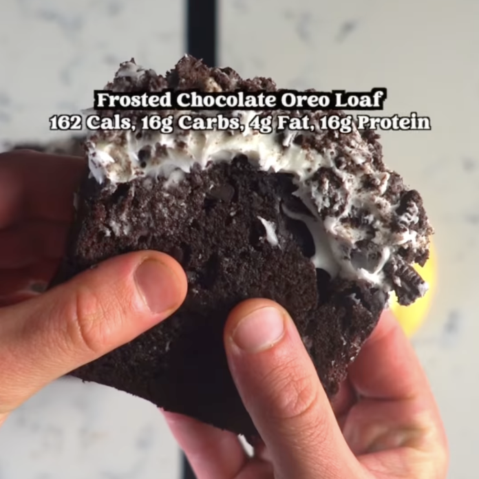

Pan de Oreo Glaseado de Chocolate
Ingredientes:
Ingredientes para los ingredientes húmedos:
- 2 huevos enteros
- 340 g o 1 y 1/2 tazas de yogur griego natural sin grasa
- 60 g o 1/4 taza de mantequilla ligera, derretida
- 30 ml o 2 cucharadas de leche de almendra
Ingredientes para los ingredientes secos:
- 180 g o 1 y 1/2 tazas de harina de uso general
- 144 g o 3/4 taza de sustituto de azúcar granulada (yo usé Swerve)
- 3 Scoops de proteína en polvo de vainilla o chocolate
- 25 g o 5 cucharadas de cacao en polvo
- 4g o 1 cucharadita de polvo de hornear
- 1g o 1/3 cucharadita de goma xantana
- 1g o 1/2 cucharadita de sal
Ingredientes para el glaseado:
- 113g o 1/2 taza de yogur griego sin grasa
- 24g o 2 cucharadas de queso crema sin grasa
- 36g o 3 cucharadas de sustituto de azúcar en polvo
Ingredientes para la cobertura:
- 4 galletas Oreo, trituradas
Instrucciones:
- Precalienta el horno a 350 grados.
- Toma un bol para mezclar. Añade los ingredientes húmedos. Mezcla bien.
- Toma otro bol para mezclar. Añade los ingredientes secos.
- Añade los ingredientes secos a los ingredientes húmedos. Mezcla.
- Vierte la mezcla en un molde para pan con papel pergamino o spray para cocinar. Hornea a 350 grados
durante 45 minutos.
- Toma otro bol para mezclar. Añade los ingredientes para el glaseado. Mezcla. Guarda en el
refrigerador mientras horneas para que espese.
- Deja reposar durante 15 minutos. Cubre con el glaseado mezclado. Añade los ingredientes para la
cobertura encima. Corta en 12 rebanadas. Guarda en el refrigerador. ¡Luego disfruta!